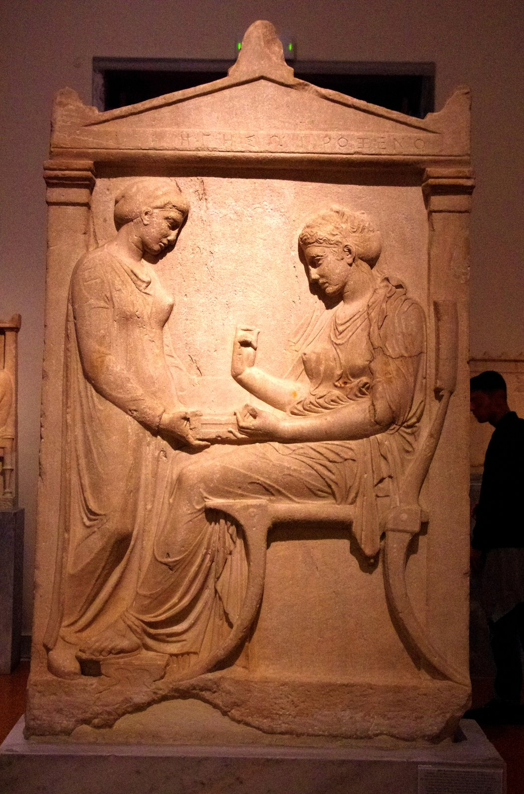
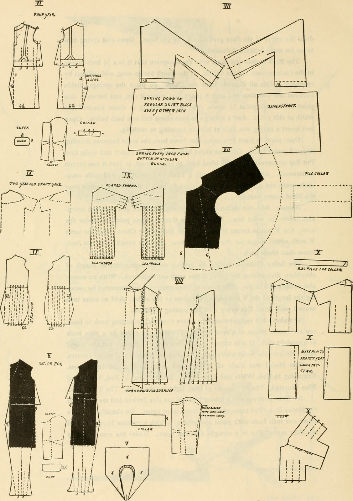

THE HISTORICAL PANACHE OF BATISTE
Tracing the four-century journey of cambric cloth from the subterranean cellars of Cambrai to the pinnacle of contemporary bespoke tailoring.
The Legend of Baptist Cambray
In late 16th-century Flanders, in the commune of Cambrai, a master weaver named Baptist Cambray unlocked a revolutionary textile breakthrough. Traditional linen cloth of the era was coarse, stiff, and prone to irregular slubs. Cambray discovered that by spinning gossamer-fine flax fibers inside damp subterranean stone cellars, the natural ambient humidity prevented the fragile fibers from snapping on the spinning wheel.
The resulting cloth—termed batiste across continental Europe and cambric in the English lexicon—was so fine, translucent, and silky that it immediately captured the favor of the French royal court, rapidly becoming the mandatory textile for noble ruff collars, chemises, and embroidered handkerchiefs.
In subterranean vaults where dampness softened every strand of flax, the gossamer thread of Cambrai was born—so fine that court heralds deemed it woven of morning mist.— Historical Records of Flanders Weavers Guild, 1599

Extra-Long Staple Cotton & Dew-Retted Flax
Contemporary cambric crafted for Cambric Panache begins with the world's most distinguished plant fibers. We source certified Giza 45 extra-long staple cotton grown along the fertile alluvial soils of the Nile Delta, blended with dew-retted flax harvested from Normandy and the Lys river valley.
These ultra-fine fibers—measuring over 38 millimeters in staple length with micro-diameters of under 12 microns—are combed repeatedly to eliminate short fibers before being spun into two-ply 200s yarns. The resulting yarn is singed over open gas flames to burn off surface fuzz, ensuring the signature crisp, lustrous finish that distinguishes genuine cambric from cloudy muslin.
Architectural Pattern Cutting on Parchment
Unlike mass-manufactured fashion that cuts dozens of fabric layers simultaneously with vibrating laser saws, Cambric Panache adheres strictly to single-ply hand cutting. Each cambric panel is laid flat on heavy cork cutting benches, pinned with fine insect pins to prevent weave slippage, and scored individually with hand-ground Sheffield steel shears.
This painstaking individual cutting ensures that the warp and weft yarns align precisely perpendicular across the chest, shoulders, and sleeve plackets, eliminating the twisted seams and collar torque that afflict commercial shirts after washing.

PRESERVING FOUR CENTURIES OF TEXTILE EXCELLENCE
Our bespoke cutters study original 18th-century court dress engageantes and chemises preserved in European textile conservatories, translating historical gather proportions into modern luxury shirts of effortless sartorial panache.
Discover Bespoke Commissions